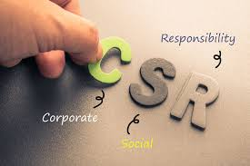

Corporate Social Responsibility
God Forbid Twitter Cancels You
Corporate social responsibility is aimed at self regulating businesses so that they are not only socially accountable, but also attract potential consumers that agree with their practices.
Find out more about corporate social responsibility by clicking below.